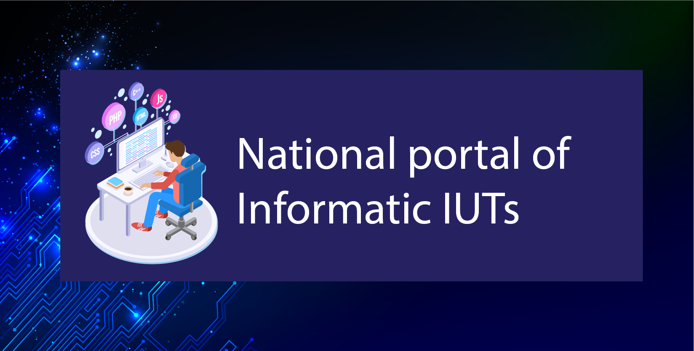

Here is the list of professions, classified by categories, accessible via a informatical DUT and / or a informatical Professional License
Database administrator, systems and networks administrator, operations analyst, micro park manager, help desk technician, networks and telecoms technician, web designer, webmaster.
Project managers in IT services or ICT, Multimedia video game developer, Analyst, programmer, Project director, Integrator, ERP parameteriser.
IT auditor, Director of information systems, Head of studies, Head of operations.
Internal business manager, Trainer, System analyst, Technical director, Security manager, Security specialist, Method specialist, Network architect, Technical architect, Database architect.
MOA project manager, Consulting - information system consultant, Business intelligence consultant, Security consultant, MOA consultant, ERP consultant, Consultant specializing in markets not yet mature, Change management manager, Business IS manager, Manager functional project, IS architect, IT correspondent.
The primary vocation of the IUT is to lead directly to the professional world, but it is possible to continue studying if the student wishes.